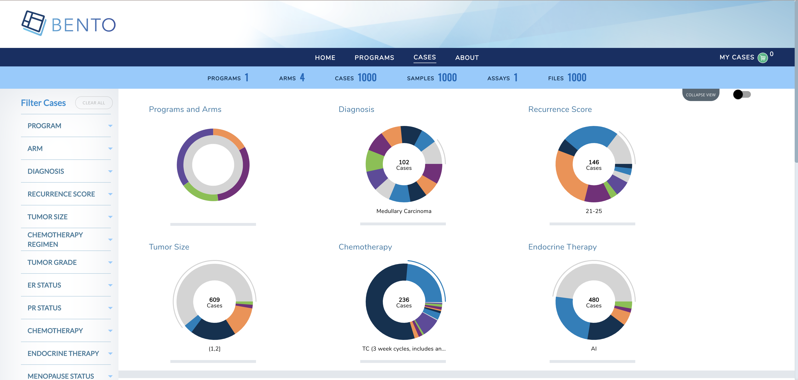
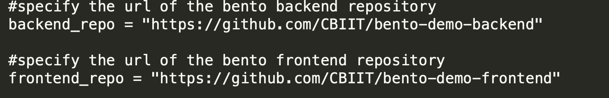

Deploying Bento on GCP Cloud Run¶
This is the user documentation on provisioning bento on AWS.
A. Introduction¶
The purpose of this guide is to provide instructions on how to provision and deploy Bento Framework on GCP using Serverless Service. This guide assumes that the Custodian has an operating account with Google Cloud Platform.
B. Disclaimer¶
GCP is a Pay As You Go provider, as result the use of this instruction may result in usage charges. We’re in no way responsible for any charges incurred from resources created using this documentation.
All scripts related to this documentation can be found here: Bento Custodian
C. Architecture¶
The code in this demo will create the following resources via Terraform:
A new VPC and new VPC subnets
A Cloud NAT router for egress access from the VPC subnets
A GCE Instance serving as a Bastion Host
A Private GKE Cluster with two nodes running two services - frontend and backend
Neo4j Database in private subnets
D. Pre-requisites¶
Ensure that you have the following tools installed before continuing.
E. Installations¶
a) Clone Bento Framework¶
Clone Bento Framework to a working directory. In this guide, I will be using /tmp as my working directory
bento@custodian: cd /tmp && git clone https://github.com/CBIIT/bento-custodian
Change directory to cloudrun workspace
bento@custodian:~$ cd bento-custodian/terraform/cloudrun
b) Setup GCP Environment¶
Login to your GCP account
bento@custodian:~$ gcloud auth login
Create google project. The name of the project can be anything you want or you may run gcloud config set project PROJECT_NAME to use existing project where PROJECT_NAME is the name of your project.
bento@custodian:~$ gcloud projects create PROJECT_NAME
Configure gcloud to use the newly created project or you use existing one.
bento@custodian:~$ gcloud config set project PROJECT_NAME
Create service account. Note you can name it anything you want, in this example I am calling it bento-sa
bento@custodian:~$ gcloud iam service-accounts create SERVICE_ACCOUNT
List and copy the email address of the service account SERVICE_ACCOUNT_EMAIL
bento@custodian:~$ gcloud iam service-accounts list
NAME EMAIL DISABLED
bento-sa@bento-cloudrun.iam.gserviceaccount.com False
Create a credential key for the service account. Note the name of the file can be anything but ensure it ends with .json. Google allows other file formats but in this example I will be using json format.
bento@custodian:~$ gcloud iam service-accounts keys create gcloud_api_key.json --iam-account=SERVICE_ACCOUNT_EMAIL
Get your Billing ACCOUNT_ID
bento@custodian:~$ gcloud beta billing accounts list
ACCOUNT_ID NAME OPEN MASTER_ACCOUNT_ID
01T111-K20X0C-Y00000 My Billing Account True
Link your project to Billing account
bento@custodian:~$ gcloud beta billing projects link PROJECT_NAME --billing-account ACCOUNT_ID
Enable google cloud services apis
bento@custodian:$ gcloud services enable cloudresourcemanager.googleapis.com
bento@custodian:$ gcloud services enable iam.googleapis.com
bento@custodian:$ gcloud services enable cloudbilling.googleapis.com
bento@custodian:$ gcloud services enable compute.googleapis.com
bento@custodian:$ gcloud services enable run.googleapis.com
bento@custodian:$ gcloud services enable vpcaccess.googleapis.com
Grant IAM roles to the service account
bento@custodian:$ gcloud projects add-iam-policy-binding PROJECT_NAME --member serviceAccount:SERVICE_ACCOUNT_EMAIL --role roles/owner
c) Populate vars.tfvars file¶
Using your favorite text editor open and edit ${WORKING-DIRECTORY}/bento-custodian/terraform/cloudrun/vars.tfvars file. This is a variable file that will be used as input to the terraform.
Please refer to ${WORKING-DIRECTORY}/bento-custodian/terraform/cloudrun/variables.tf file for full descriptions of each the variables listed in the vars.tfvars file. At minimum you will need to provide value to the following.
gcp_auth_file = name of the service account key generated earlier
gcp_region = gcp region to use for this deployment
gcp_project = name of the gcp project created earlier
stack_name = can be anything
service_account_id = name of the service account created earlier
d) Deploy Application¶
Run terraform init
bento@custodian:~$ terraform init
Run terraform plan. This command gives you insight into all the resources that will be created. Review the output and if satisfy continue to the next step
bento@custodian:~$ terraform plan -var-file=vars.tfvars
Review the output of the above command. It will show all the resources to be created.
Run terraform apply to provision your Bento environment
bento@custodian:~$ terraform apply -var-file=vars.tfvars -auto-approve
At this point, if there are no errors your infrastructure will be provisioned. Note it will take about 10 minutes for the application to completely deployed.
Outputs:
backend_url = https://bento-cloudrun-backend-rxpxr4ih3q-uk.a.run.app
bastion_host_private_ip = 172.16.1.2
bastion_host_public_ip = 34.86.56.119
db_private_ip = 192.168.5.2
frontend_url = https://bento-cloudrun-frontend-rxpxr4ih3q-uk.a.run.app
service_id = bento-sa@bento-cloudrun.iam.gserviceaccount.com
e) Verify Deployment¶
When the deployment is completed, navigate to the *frontend_url* to verify that the application is loaded successfully.
Home page

Cases Page 
Program Page

f) Teardown¶
To destroy resouces created in this demo;
Run terraform destroy to destroy the resources provisioned.
bento@custodian:~$ terraform destroy -var-file=vars.tfvars -auto-approve
F. Application Updates¶
Many times, there are needs to customize Bento Framework based on your unique needs or some requirements, to make updates to the existing resources, it is recommended to fork both frontend and backend repositories used in this demo - that is backend and frontend. Follow below steps to apply any changes made to either backend or frontend codes.
a) Edit vars.tfvars file¶
Using your favorite text editor open and edit ${WORKING-DIRECTORY}/bento-custodian/terraform/cloudrun/vars.tfvars file.
Replace the values of backend_repo and frontend_repo with the new url of your forked repositories as shown below; 
b) Apply changes to terraform state¶
Run terraform apply
bento@custodian:~$ terraform apply -var-file=vars.tfvars -auto-approve
c) Apply Changes using Ansible¶
From the current working location change directory to ${WORKING-DIRECTORY}/bento-custodian/terraform/cloudrun/ansible
bento@custodian:~$ cd ansible
Run ansible-playbook update-custodian.yml to deploy changes committed to git repository. Note, if you wish to apply updates using git tags, edit ${WORKING-DIRECTORY}/bento-custodian/terraform/cloudrun/ansible/vars.yaml file by supplying appopriate tag values to:
frontend_tag - git tag for forked frontend repository
backend_tag - git tag for forked backend repository
It is also recommended to change docker tag (image_tag) in between changes.
bento@custodian:~$ ansible-playbook update-custodian.yml
G. Data Model Updates¶
a) Edit vars.tfvars file¶
Using your favorite text editor open and edit ${WORKING-DIRECTORY}/bento-custodian/terraform/cloudrun/vars.tfvars file.
Replace the values of data_repo with the new url of your forked data-model repository.
b) Apply changes to terraform state¶
Run terraform apply
bento@custodian:~$ terraform apply -var-file=vars.tfvars -auto-approve
c) Apply Changes using Ansible¶
From the current working location change directory to ${WORKING-DIRECTORY}/bento-custodian/terraform/cloudrun/ansible
bento@custodian:~$ cd ansible
Run ansible-playbook update-db.yml to load data to neo4j database from changes committed to data model repository. Note, if you wish to apply updates using git tags, edit ${WORKING-DIRECTORY}/bento-custodian/terraform/cloudrun/ansible/vars.yaml file by supplying appopriate tag value to:
data_tag - git tag for forked data model repository
You may optionally change the values of model_file_name, dataset and properties_file_name if those files have modified and the files renamed from default.
bento@custodian:~$ ansible-playbook update-db.yml